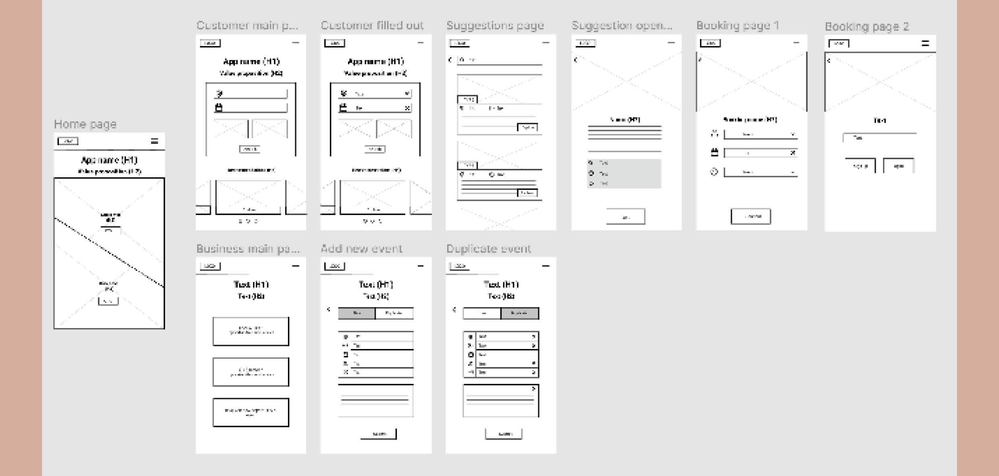

Design a product that enables people to look after multiple plants when they are at home and when they have to leave them in the care of another.
We focussed on desk research, a survey and user interviews. Desk research showed me that pets can improve the wellbeing of people. Yet, pet ownership can also cause a lot of stress, affecting the mental health of their ownsers negatively. I also found out that abandoned pets often have trust issues that can only be resolved through positive interactions with humans.
Survey findings and interviews showed me that people aren't always aware of opportunities that exist that would enable them to interact with animals. It also showed that users find it very important that any human-animal interactions are ethical.
Following the research phase, I decided to think about a market-place style app to connect users with business that work with animals.
Personas:
User journey:
Storyboard:
After focussing on the user and looking at the products of competitors, I designed some lo-fi wireframes and the information architecture of the product. I then built a functioning prototype in Figma.
Information architecture:
Wireframes:
I tested both sides of the track with a few people and incorporated their feedback.
The process I went through was of course not perfect. It would have been great to reach out to business owners, rather than rely on desk research alone, for example. It would also have been beneficial to narrow down the target audience sooner. The product is also not fully developed: